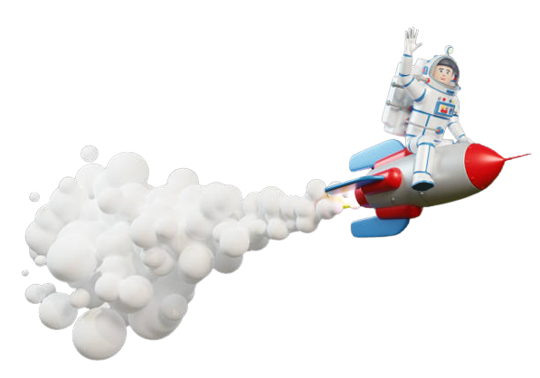

Tata Surya adalah kumpulan benda langit yang terdiri atas sebuah
bintang yang disebut Matahari dan semua objek yang terikat oleh gaya
gravitasinya. Objek-objek tersebut termasuk delapan buah planet yang
sudah diketahui dengan orbit berbentuk elips, lima planet
kerdil/katai, 173 satelit alami yang telah diidentifikasi, dan
jutaan benda langit (meteor, asteroid, komet) lainnya.

Sejarah
Lima planet terdekat ke Matahari selain Bumi (Merkurius, Venus,
Mars, Jupiter dan Saturnus) telah dikenal sejak zaman dahulu karena
mereka semua bisa dilihat dengan mata telanjang. Banyak bangsa di
dunia ini memiliki nama sendiri untuk masing-masing planet.
Perkembangan ilmu pengetahuan dan teknologi pengamatan pada lima
abad lalu membawa manusia untuk memahami benda-benda langit terbebas
dari selubung mitologi. Galileo Galilei (1564–1642) dengan teleskop
refraktornya mampu menjadikan mata manusia "lebih tajam" dalam
mengamati benda langit yang tidak bisa diamati melalui mata
telanjang. Karena teleskop Galileo bisa mengamati lebih tajam, ia
bisa melihat berbagai perubahan bentuk penampakan Venus, seperti
Venus Sabit atau Venus Purnama sebagai akibat perubahan posisi Venus
terhadap Matahari. Penalaran Venus mengitari Matahari makin
memperkuat teori heliosentris, yaitu bahwa Matahari adalah pusat
alam semesta, bukan Bumi, yang sebelumnya digagas oleh Nicolaus
Copernicus (1473–1543). Susunan heliosentris adalah Matahari
dikelilingi oleh Merkurius hingga Saturnus. Teleskop Galileo terus
disempurnakan oleh ilmuwan lain seperti Christian Huygens
(1629–1695) yang menemukan Titan, satelit Saturnus, yang berada
hampir 2 kali jarak orbit Bumi-Jupiter.[butuh rujukan] Perkembangan
teleskop juga diimbangi pula dengan perkembangan perhitungan gerak
benda-benda langit dan hubungan satu dengan yang lain melalui
Johannes Kepler (1571–1630) dengan Hukum Kepler. Dan puncaknya, Sir
Isaac Newton (1642–1727) dengan hukum gravitasi. Dengan dua teori
perhitungan inilah yang memungkinkan pencarian dan perhitungan
benda-benda langit selanjutnya.[butuh rujukan] Pada 1781, William
Herschel (1738–1822) menemukan Uranus. Perhitungan yang dilakukan
pada orbit Uranus mendapati bahwa orbit planet tersebut terpengaruh
oleh benda langit lain yang belum diketahui saat itu. Menggunakan
perhitungan yang sama, para astronom menemukan Neptunus pada 1846.
Penemuan Neptunus ternyata tidak cukup menjelaskan gangguan pada
orbit Uranus. Kondisi ini memunculkan hipotesis planet lain, "Planet
X", yang masih belum ditemukan. Pencarian tersebut berujung pada
penemuan Pluto pada 1930 oleh Clyde Tombaugh. Pada saat Pluto
ditemukan, objek tersebut hanya diketahui sebagai satu-satunya objek
antariksa yang berada di luar orbit Neptunus. Pada 1978, Charon,
satelit terbesar yang mengelilingi Pluto ditemukan. Charon ditemukan
melalui analisis piringan fotografik yang menunjukkan adanya
"benjolan" di sisi Pluto. Para astronom kemudian menemukan sekitar
1.000 objek kecil lainnya yang letaknya melampaui Neptunus (disebut
objek trans-Neptunus), yang juga mengelilingi Matahari. Terdapat
sekitar 100.000 objek serupa yang dikenal sebagai Objek Sabuk Kuiper
(Sabuk Kuiper adalah bagian dari objek-objek trans-Neptunus).
Belasan benda langit termasuk dalam Objek Sabuk Kuiper di antaranya
Quaoar (1.250 km pada Juni 2002), Huya (750 km pada Maret 2000),
Sedna (1.800 km pada Maret 2004), Orcus, Vesta, Pallas, Hygiea,
Varuna, dan 2003 EL61 (1.500 km pada Mei 2004).[butuh rujukan]
Penemuan 2003 EL61 cukup menghebohkan karena Objek Sabuk Kuiper ini
diketahui juga memiliki satelit pada Januari 2005 meskipun berukuran
lebih kecil dari Pluto. Dan puncaknya adalah penemuan UB 313 (2.700
km pada Oktober 2003) yang diberi nama oleh penemunya Xena. Selain
lebih besar dari Pluto, objek ini juga memiliki satelit
Struktur
Komponen utama sistem Tata Surya adalah matahari, sebuah bintang
deret utama kelas G2 yang mengandung 99,86 persen massa dari sistem
dan mendominasi seluruh dengan gaya gravitasinya. Jupiter dan
Saturnus, dua komponen terbesar yang mengedari Matahari, mencakup
kira-kira 90 persen massa selebihnya. Hampir semua objek-objek besar
yang mengorbit Matahari terletak pada bidang edaran bumi, yang
umumnya dinamai ekliptika. Semua planet terletak sangat dekat pada
ekliptika, sementara komet dan objek-objek sabuk Kuiper biasanya
memiliki beda sudut yang sangat besar dibandingkan ekliptika.
Planet-planet dan objek-objek Tata Surya juga mengorbit mengelilingi
Matahari berlawanan dengan arah jarum jam jika dilihat dari atas
kutub utara Matahari, terkecuali Komet Halley. Hukum Gerakan Planet
Kepler menjabarkan bahwa orbit dari objek-objek Tata Surya
sekeliling Matahari bergerak mengikuti bentuk elips dengan Matahari
sebagai salah satu titik fokusnya. Objek yang berjarak lebih dekat
dari Matahari (sumbu semi-mayor-nya lebih kecil) memiliki tahun
waktu yang lebih pendek. Pada orbit elips, jarak antara objek dengan
Matahari bervariasi sepanjang tahun. Jarak terdekat antara objek
dengan Matahari dinamai perihelion, sedangkan jarak terjauh dari
Matahari dinamai aphelion. Semua objek Tata Surya bergerak tercepat
di titik perihelion dan terlambat di titik aphelion. Orbit
planet-planet bisa dibilang hampir berbentuk lingkaran, sedangkan
komet, asteroid dan objek sabuk Kuiper kebanyakan orbitnya berbentuk
elips.[butuh rujukan] Untuk mempermudah representasi, kebanyakan
diagram Tata Surya menunjukan jarak antara orbit yang sama antara
satu dengan lainnya. Pada kenyataannya, dengan beberapa
perkecualian, semakin jauh letak sebuah planet atau sabuk dari
Matahari, semakin besar jarak antara objek itu dengan jalur edaran
orbit sebelumnya. Sebagai contoh, Venus terletak sekitar sekitar
0,33 satuan astronomi (SA) lebih dari Merkurius[d], sedangkan
Saturnus adalah 4,3 SA dari Jupiter, dan Neptunus terletak 10,5 SA
dari Uranus. Beberapa upaya telah dicoba untuk menentukan korelasi
jarak antar orbit ini (hukum Titus-Bode), tetapi sejauh ini tidak
satu teori pun telah diterima.[butuh rujukan] Hampir semua
planet-planet di Tata Surya juga memiliki sistem sekunder.
Kebanyakan adalah benda pengorbit alami yang disebut satelit.
Beberapa benda ini memiliki ukuran lebih besar dari planet. Hampir
semua satelit alami yang paling besar terletak di orbit sinkron,
dengan satu sisi satelit berpaling ke arah planet induknya secara
permanen. Empat planet terbesar juga memliki cincin yang berisi
partikel-partikel kecil yang mengorbit secara serempak.
Planet
Matahari
Matahari Matahari adalah bintang induk Tata Surya dan merupakan
komponen utama sistem Tata Surya ini. Bintang ini berukuran 332.830
massa bumi. Massa yang besar ini menyebabkan kepadatan inti yang
cukup besar untuk bisa mendukung kesinambungan fusi nuklir dan
menyemburkan sejumlah energi yang dahsyat. Kebanyakan energi ini
dipancarkan ke luar angkasa dalam bentuk radiasi eletromagnetik,
termasuk spektrum optik.
Merkurius
Merkurius (0,4 SA dari Matahari) adalah planet terdekat dari
Matahari serta juga terkecil (0,055 massa bumi). Merkurius tidak
memiliki satelit alami dan ciri geologisnya di samping kawah
meteorid yang diketahui adalah lobed ridges atau rupes, kemungkinan
terjadi karena pengerutan pada perioda awal sejarahnya. Atmosfer
Merkurius yang hampir bisa diabaikan terdiri dari atom-atom yang
terlepas dari permukaannya karena semburan angin surya. Besarnya
inti besi dan tipisnya kerak Merkurius masih belum bisa dapat
diterangkan. Menurut dugaan hipotesis lapisan luar planet ini
terlepas setelah terjadi tabrakan raksasa, dan perkembangan
("akresi") penuhnya terhambat oleh energi awal Matahari.
Venus
Venus (0,7 SA dari Matahari) berukuran mirip bumi (0,815
massa bumi). Dan seperti bumi, planet ini memiliki selimut kulit
silikat yang tebal dan berinti besi, atmosfernya juga tebal dan
memiliki aktivitas geologi. Akan tetapi planet ini lebih kering dari
bumi dan atmosfernya sembilan kali lebih padat dari bumi. Venus
tidak memiliki satelit. Venus adalah planet terpanas dengan suhu
permukaan mencapai 400 °C, kemungkinan besar disebabkan jumlah gas
rumah kaca yang terkandung di dalam atmosfer. Sejauh ini aktivitas
geologis Venus belum dideteksi, tetapi karena planet ini tidak
memiliki medan magnet yang bisa mencegah habisnya atmosfer, diduga
sumber atmosfer Venus berasal dari gunung berapi.
Bumi
Bumi (1 SA dari Matahari) adalah planet bagian dalam yang terbesar
dan terpadat, satu-satunya yang diketahui memiliki aktivitas geologi
dan satu-satunya planet yang diketahui memiliki mahluk hidup. 70%
bagian bumi ditutup oleh air sedangkan 30%bumi ditutupi oleh
daratan. Hidrosfernya yang cair adalah khas di antara planet-planet
kebumian dan juga merupakan satu-satunya planet yang diamati
memiliki lempeng tektonik. Atmosfer bumi sangat berbeda dibandingkan
planet-planet lainnya, karena dipengaruhi oleh keberadaan mahluk
hidup yang menghasilkan 21% oksigen. Bumi memiliki satu satelit,
bulan, satu-satunya satelit besar dari planet kebumian di dalam Tata
Surya.
Mars
Mars (1,5 SA dari Matahari) berukuran lebih kecil dari bumi dan
Venus (0,107 massa bumi). Planet ini memiliki atmosfer tipis yang
kandungan utamanya adalah karbon dioksida. Permukaan Mars yang
dipenuhi gunung berapi raksasa seperti Olympus Mons dan lembah
retakan seperti Valles marineris, menunjukan aktivitas geologis yang
terus terjadi sampai baru belakangan ini. Warna merahnya berasal
dari warna karat tanahnya yang kaya besi.Mars mempunyai dua satelit
alami kecil (Deimos dan Fobos) yang diduga merupakan asteroid yang
terjebak gravitasi Mars.
Jupiter
Jupiter (5,2 SA), dengan 318 kali massa bumi, adalah 2,5 kali massa
dari gabungan seluruh planet lainnya. Kandungan utamanya adalah
hidrogen dan helium. Sumber panas di dalam Jupiter menyebabkan
timbulnya beberapa ciri semi-permanen pada atmosfernya, sebagai
contoh pita pita awan dan Bintik Merah Raksasa. Sejauh yang
diketahui Jupiter memiliki 63 satelit. Empat yang terbesar,
Ganimede, Kalisto, Io, dan Europa menampakan kemiripan dengan planet
kebumian, seperti gunung berapi dan inti yang panas. Ganimede, yang
merupakan satelit terbesar di Tata Surya, berukuran lebih besar dari
Merkurius.
Saturnus
Saturnus (9,5 SA) yang dikenal dengan sistem cincinnya, memiliki
beberapa kesamaan dengan Jupiter, sebagai contoh komposisi
atmosfernya. Meskipun Saturnus sebesar 60% volume Jupiter, planet
ini hanya memiliki massa kurang dari sepertiga Jupiter atau 95 kali
massa bumi, membuat planet ini sebuah planet yang paling tidak padat
di Tata Surya.Saturnus memiliki 60 satelit yang diketahui sejauh ini
(dan 3 yang belum dipastikan) dua di antaranya Titan dan Enceladus,
menunjukan aktivitas geologis, meski hampir terdiri hanya dari es
saja.[60] Titan berukuran lebih besar dari Merkurius dan merupakan
satu-satunya satelit di Tata Surya yang memiliki atmosfer yang cukup
berarti.
Uranus
Uranus (19,6 SA) yang memiliki 14 kali massa bumi, adalah planet
yang paling ringan di antara planet-planet luar. Planet ini memiliki
kelainan ciri orbit. Uranus mengedari Matahari dengan bujkuran poros
90 derajat pada ekliptika. Planet ini memiliki inti yang sangat
dingin dibandingkan gas raksasa lainnya dan hanya sedikit
memancarkan energi panas. Uranus memiliki 27 satelit yang diketahui,
yang terbesar adalah Titania, Oberon, Umbriel, Ariel dan Miranda.
Neptunus
Neptunus (30 SA) meskipun sedikit lebih kecil dari Uranus, memiliki
17 kali massa bumi, sehingga membuatnya lebih padat. Planet ini
memancarkan panas dari dalam tetapi tidak sebanyak Jupiter atau
Saturnus.Neptunus memiliki 13 satelit yang diketahui. Yang terbesar,
Triton, geologinya aktif, dan memiliki geyser nitrogen cair.Triton
adalah satu-satunya satelit besar yang orbitnya terbalik arah
(retrograde). Neptunus juga didampingi beberapa planet minor pada
orbitnya, yang disebut Trojan Neptunus. Benda-benda ini memiliki
resonansi 1:1 dengan Neptunus.